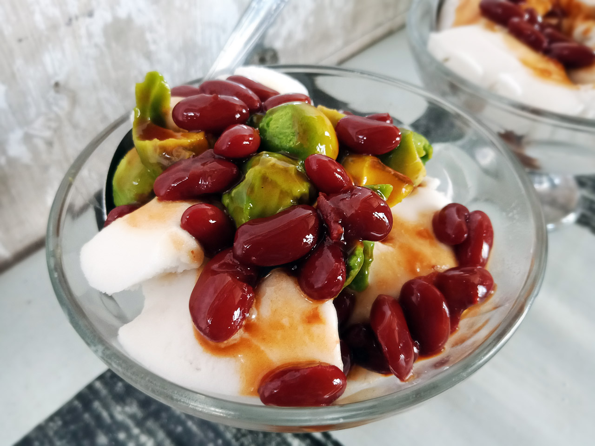

|  |
|
Es kacang merah adalah sebuah minuman yang umum ditemukan di Hong Kong. Minuman tersebut biasanya disajikan di tempat-tempat makan seperti cha chaan teng. Minuman tersebut adalah hidangan penutup populer pada musim panas. Bahan-bahan standarnya meliputi kacang adzuki, sirup gula batu ringan dan susu evaporas |
|
Toko terdekat dari parkiran anda terdapat di sebelah toko bangunan dan di depan mixue |